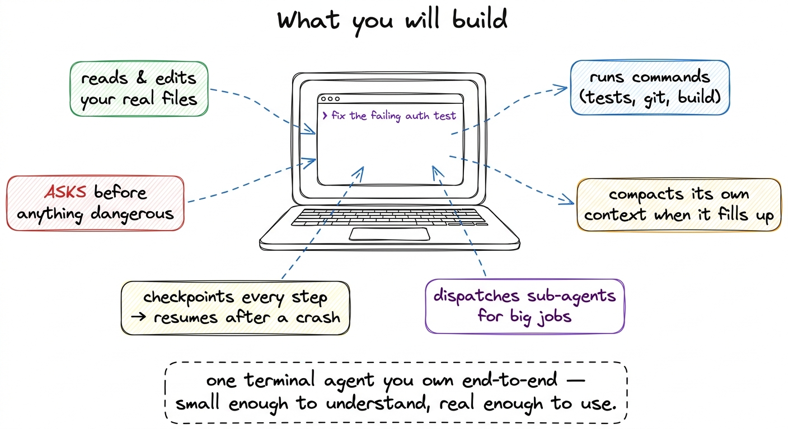
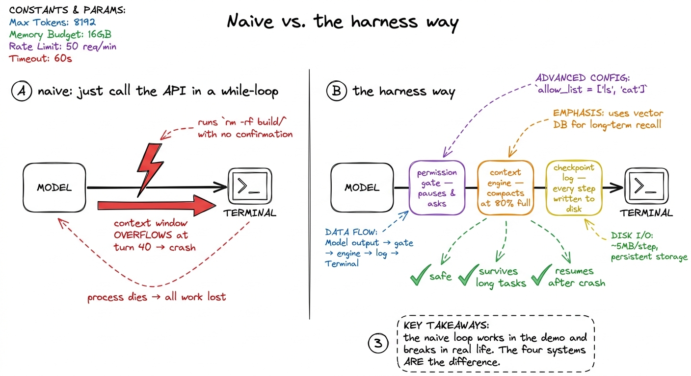
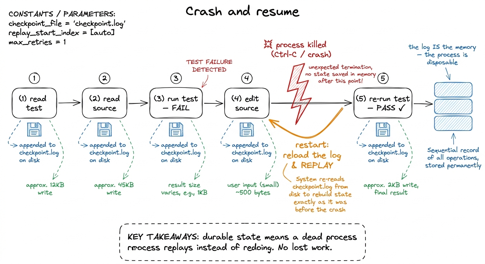
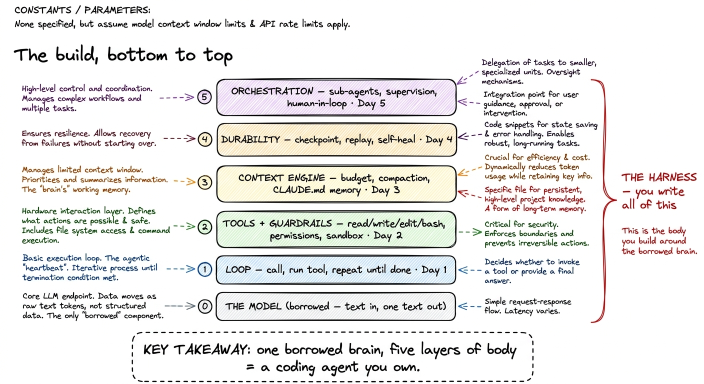

What you will build: a pi-style harness
Here is the honest version of what this book is: by the end of it you will have written, from scratch, a terminal coding agent that you understand every line of. Not a wrapper around someone else's framework, not a plugin, not a config file that summons magic — an actual program that sits in your terminal, reads and edits the real files in your real project, runs commands, asks before it does anything dangerous, and keeps working coherently on a task long enough to be useful. It will be small enough to hold in your head and real enough that you will catch yourself using it instead of the tool you paid for.
The spirit we are building in is pi — the small, legible coding agent from pi.dev whose whole thesis is that a capable harness does not have to be enormous.1 pi (pi.dev) is the reference we keep returning to precisely because it is readable. Claude Code and Cursor are the industrial versions of the same five ideas; pi proves you can hold all five in one head. When something in this book feels like it "must" require a huge team, pi is the counterexample. We take Claude Code and Hermes as our other case studies — the production-grade versions — but the thing you type into existence is a pi-style agent, one layer at a time. This chapter is the picture on the box: what the finished thing does, and which five capabilities we bolt on to get there.
The one-sentence spec
Strip away the marketing and a coding agent is this: a loop that lets a language model act on your computer, safely, for as long as the job takes. Every noun in that sentence is a system you will build. "A loop" is Layer 1. "Act on your computer" means tools. "Safely" means permission gates and a sandbox. "For as long as the job takes" means context management so it does not choke, and durability so it does not die. And "the job" being large sometimes means orchestration — splitting work across sub-agents.

figure rendering · The finished project: a terminal agent that reads and edits real filesLet me walk you through what it actually feels like to use, because the feel is the point.
A session, from the outside
You open a terminal in your project and type a request in plain English: "the login test is failing — figure out why and fix it." You hit enter, and then you watch.
The agent says it wants to look at the test, and reads tests/test_login.py. It reads the source file the test imports. It runs the test itself with run_bash, sees the traceback, and reasons out loud about the actual cause — a renamed field the test still references. It proposes an edit to the source, and here it pauses and asks you: "apply this change to auth/user.py?" You say yes. It re-runs the test, sees green, and tells you it is done. Four or five laps of a loop, real files touched on your real disk, one human confirmation at the one moment that mattered.
That entire experience is assembled from parts you will write. The reading and editing are tools. The pause before touching your code is a permission gate. The "reasons, acts, observes, reasons again" rhythm is the loop. Nothing about it is exotic once you have built each piece — and the surprise of this book is how few lines each piece takes.
The five capabilities, and why each one is non-negotiable
The bare model at the center gives you exactly one thing: text in, one text out, no memory, no hands, no persistence.2 We derive this from nothing in what is a harness — the model is a pure stateless function, and everything that makes it feel like a colleague is the harness wrapped around it. This chapter assumes you have felt that distinction. Every capability below exists to cover something that raw function cannot do.
It reads and edits real files. A coding agent that cannot see your code is a very expensive rubber duck. So we give the model read_file, write_file, and edit_file — and the editing one matters more than it looks, because a good edit tool does surgical find-and-replace on a snippet rather than rewriting whole files, which is both cheaper and far safer. This is Layer 2, tools, and the shape of each tool is a contract you write as a JSON schema that teaches the model how to call it.
It asks before anything dangerous. The same run_bash that runs your tests can run rm -rf if the model is confused or the request is adversarial. So before any command with teeth, the harness stops and asks — and the interesting engineering is the policy: which actions are auto-approved, which always need a human, and how the user picks a mode (from "ask me everything" to "you drive, I'll watch").3 Real harnesses ship exactly this dial. Claude Code has its permission modes and an allow/deny list; pi gates shell and write access the same way. We build a simplified version of that policy engine, plus a sandbox so even an approved mistake has a bounded blast radius.

figure rendering · The naive loop works in a demo and breaks in real life. Permission gatIt compacts its own context. The context window is the scarcest resource in the whole system. On a long task the running conversation — every file it read, every command output — grows until it no longer fits. A naive loop simply crashes at that wall. Our harness watches its own budget and, when it approaches the limit, summarizes the old turns into a compact digest and keeps going, the way Claude Code shows you "compacting conversation…" mid-session. That is Layer 3, the context engine, and alongside it a memory layer — a CLAUDE.md-style file — so the agent starts every run already knowing the shape of your project instead of rediscovering it.
It checkpoints every step and resumes after a crash. Real agents get interrupted: you hit Ctrl-C, the network blips, the machine sleeps. If the agent's only memory is a variable in a running process, an interruption is a total loss of a twenty-minute task. So we make the harness write each step to durable storage — the message array, the tool results, the position in the loop — such that a fresh process can reload the log and replay to exactly where it left off instead of starting over. This is Layer 4, durable execution and checkpointing, and it is the least glamorous layer and the one that turns a demo into something you trust with a long job.

figure rendering · Each step is written to a durable log, so a killed process reloads andIt dispatches sub-agents. Some jobs are too big for one context window — "audit this whole service for injection bugs" is really twenty smaller investigations. So the top-level agent learns to spawn focused sub-agents, each with its own fresh context, hand them a narrow task, and fold their results back. This is Layer 5, orchestration, with a human-in-the-loop gate for the moves that should never be fully automatic. It is the same pattern Claude Code uses when it launches a sub-agent to go read half your repo without polluting the main conversation.
The layer map — keep it on the wall
Here is the whole build as one stack, bottom to top. Each layer gives the agent a power the bare model lacked, and each is a chapter (and roughly a day of the workshop). We never add a layer for its own sake; we add it at the exact moment the previous harness visibly fails without it.

figure rendering · The full build as a stack: a borrowed model at the base, then the loopNotice what this map is not. It is not "learn the Claude Code API." The model at the bottom is borrowed — a commodity you rent, the same one everyone else rents — and it is the smallest interesting part of the system.4 Which is the whole argument for building the harness yourself: the differentiation, the safety, the cost, and the reliability of a coding agent all live in the five layers above the model, not in the model. See what is a harness for the long version of this claim. The five layers above it are the engineering, and they are the part that is genuinely yours.
What "small enough to understand, real enough to use" really means
There is a temptation, building something like this, to reach for a framework that hands you an "agent" object with a hundred config knobs. We are doing the opposite on purpose. Every piece we write is a few dozen lines you could have written yourself, because the goal is not to have an agent — you can buy one of those — but to understand one so completely that you could rebuild it on a plane with no internet.
By the end you will have a program you can point at a real repository and say "fix the failing test," and watch it read, reason, ask, edit, and verify — and when it stumbles, you will know exactly which of the five layers to reach into, because you built all five. That is a different relationship with your tools than most engineers ever have.
The very next step is to make the failure of the naive approach concrete — why "just call the API" fails — and then we write our first bare harness: the smallest thing that genuinely acts, in about forty lines. Everything after that is adding one layer, feeling exactly what it buys you, and moving up the stack.